Пароочиститель Bissell PowerFresh Lift-off Steam 1897N
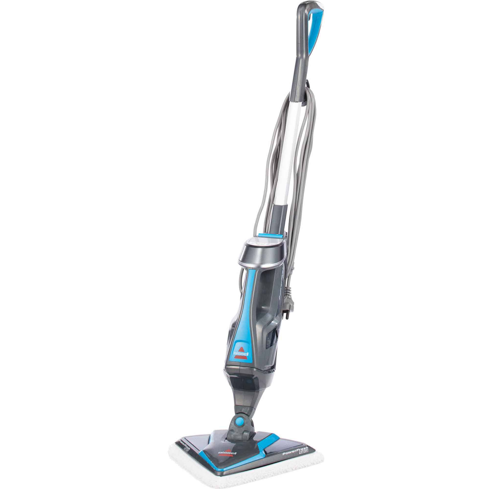Паровая швабра Lift Off от BISSELL - это компактный и лёгкий многофункциональный пароочиститель 2-в-1. Вы получаете паровую швабру для очистки герметизированных твердых полов и портативный ручной пароочиститель для очистки кухонь, ванных комнат, садовой мебели, барбекю и многого другого.
Паровая швабра
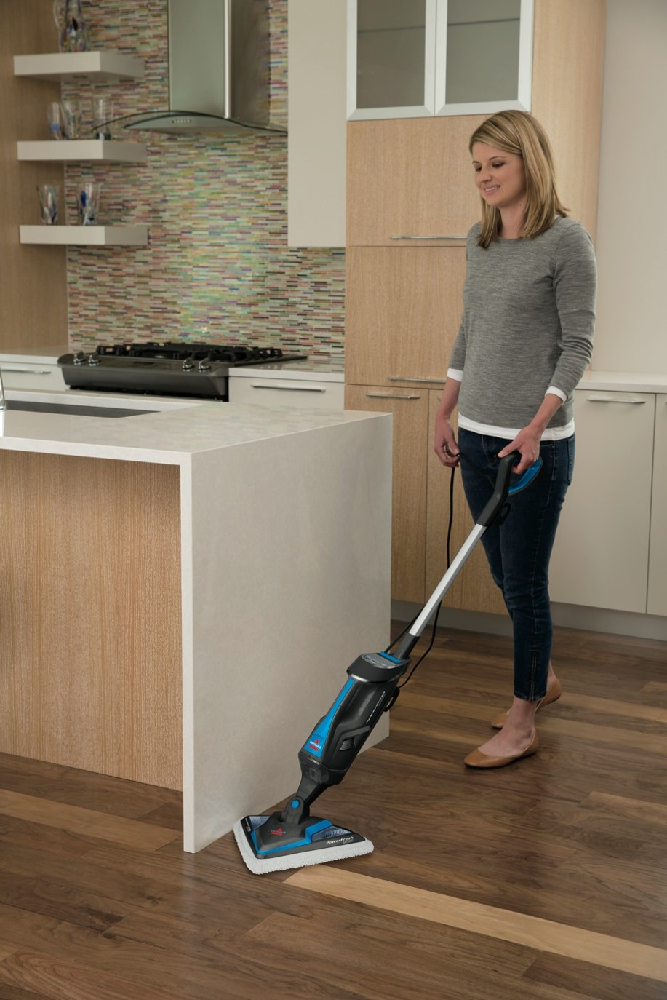Система быстрого нагрева мощностью 1600 Вт создает пар высокой температуры и готова к использованию уже через 30 секунд.
Данная система обеспечивает чистку и дезинфекцию нагретым паром, который разбивает грязь, уничтожает глубоко въевшиеся загрязнения и бактерии, оставляя поверхности абсолютно чистыми. Пар убивает 99,9 % всех микробов и бактерий.
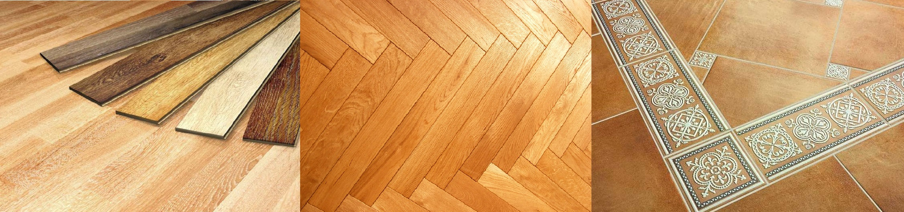Насадки из микрофибры пригодны для машинной стирки и безопасны практически для всех твердых напольных покрытий: керамическая плитка, виниловый линолеум, мрамор, камень, ламинат и лакированный паркет.
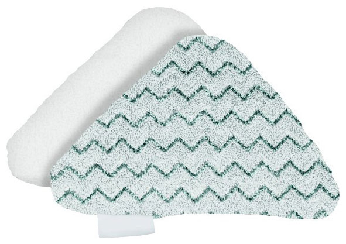В комплект поставки приборов входят освежающие диски. Вставьте освежающий диск в сетчатый карман насадки из микрофибры для получения освежающего аромата.
Белая насадка из микрофибры лучше всего подходит для повседневной чистки чувствительных к воздействиям полов, например, паркетных или ламинированных.
Накладка в серо-белую полоску предназначена для чистки очень грязных полов и удаления стойких загрязнений.
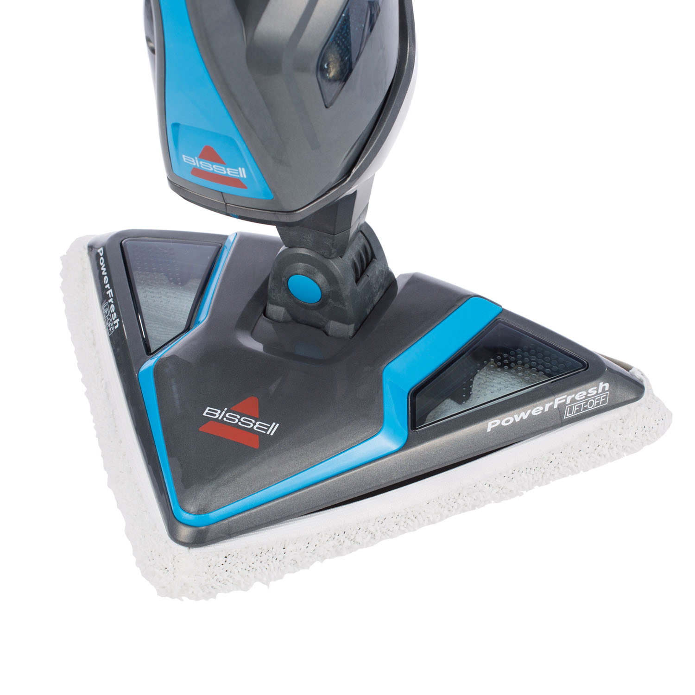Насадка треугольной формы специально разработана для лёгкой уборки в углах помещения и возле плинтуса. Подвижное шарнирное соединение насадки обеспечивает манёвренность при уборке и очистку в самых труднодоступных местах, например, под низкой мебелью.
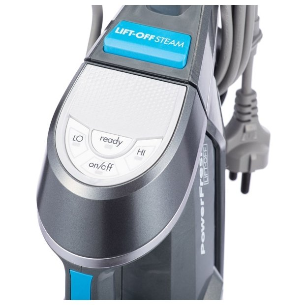Ручная регулировка пара, с помощью которой можно автоматически контролировать подачу пара в зависимости от типа поверхности в доме: HI для прочных напольных покрытий или удаления липких загрязнений или LO для чувствительных к воздействиям полов или для повседневной легкой уборки.
Модуль Lift – Off
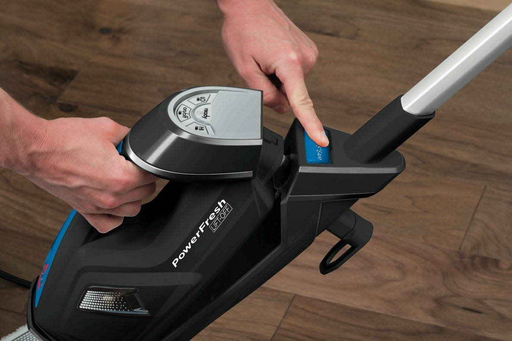Съемный модуль Lift – Off позволяет очищать и дезинфицировать другие поверхности помимо пола по всему дому: кухонные принадлежности, кухонные рабочие поверхности, одежду, детские игрушки, ванные, окна, плитку и межплиточные швы, а также колеса автомобилей, садовую мебель и аксессуары для барбекю.
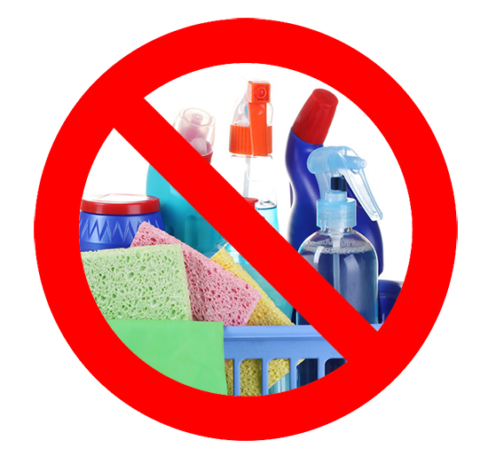Высокая температура, пар и давление обеспечивают высокие бактерицидные и очищающие способности, позволяют полностью отказаться от поверхностно-активных веществ. Теперь чистота в доме обеспечивается без всякой химии! Это свойство незаменимо для людей, страдающих аллергическими заболеваниями и высоко ценится заботящимися о своём здоровье и благополучии своих близких!
Насадки
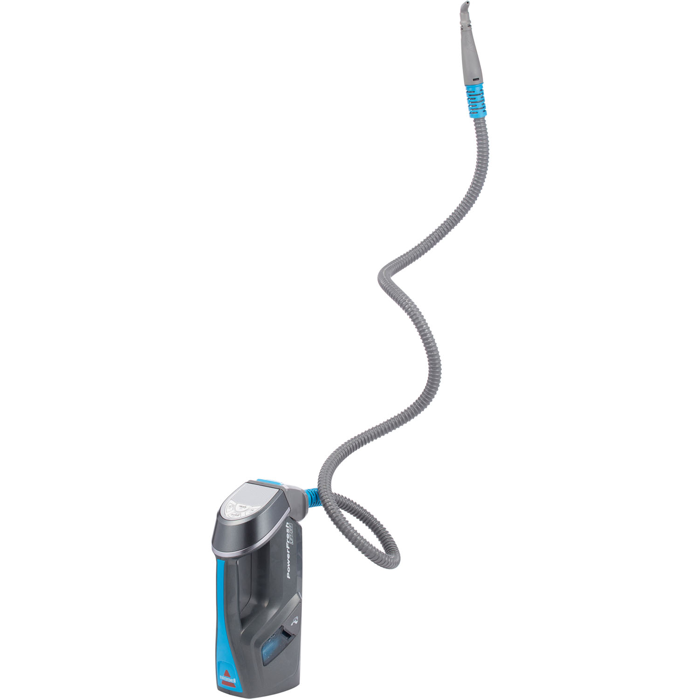Гибкий шланг-удлинитель 1,5 м для чистки труднодоступных мест

3 разноцветные круглые щетки для оттирания трудноудаляемой грязи. Имеют цветовой код: вы сами сможете определить какую насадку использовать для кухни, ванной или сантехники.
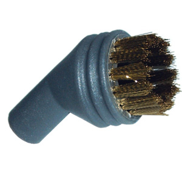Насадка с латунной щетиной для самых стойких загрязнений
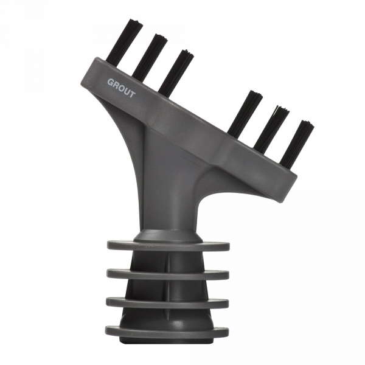Насадка для чистки швов между плиткой, а также для чистки в небольших трещинах и полостях
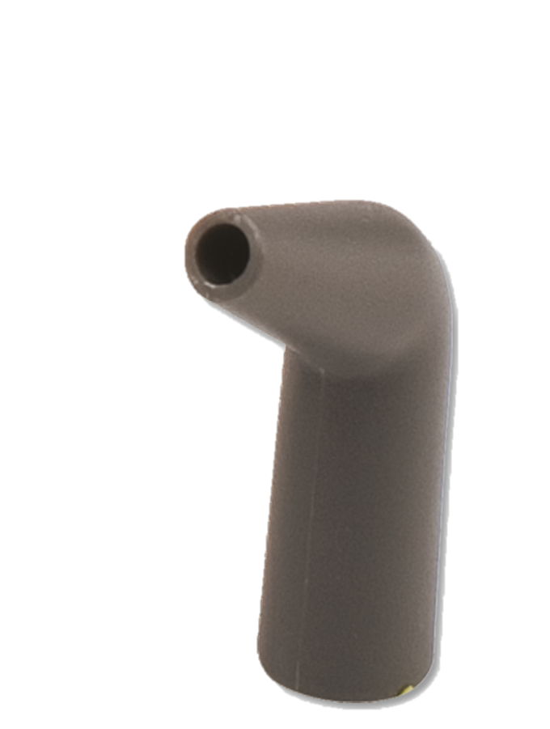Насадка для чистки в углах и труднодоступных местах
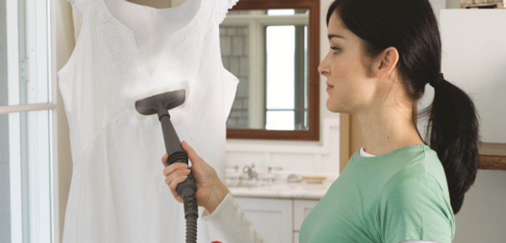Насадка для отпаривания одежды с накладкой из микрофибры для освежения и удаления складок на одежде, шторах и драпировке
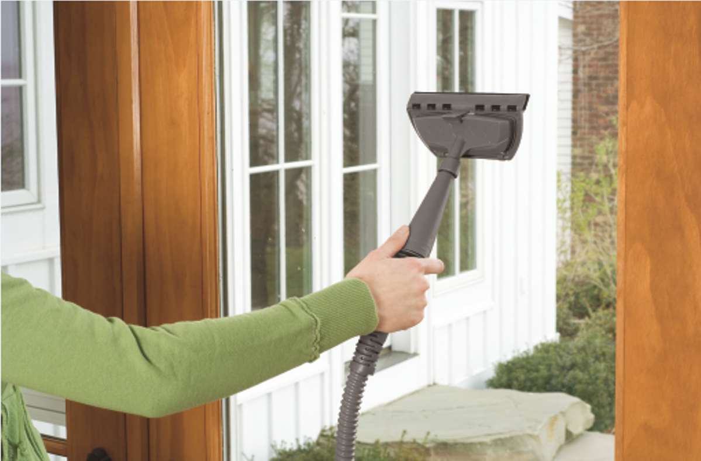Насадка для чистки стекол, окон, зеркал
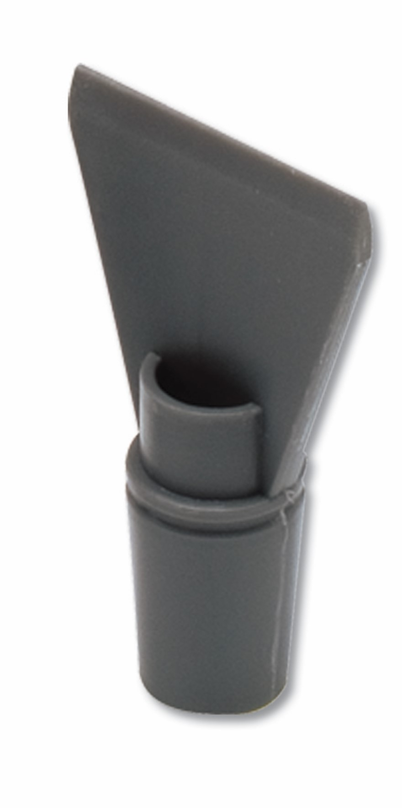Насадка-скребок для чистки особо сложных загрязнений, для удаления обоев, остатков жевательной резинки и особенно липкой грязи
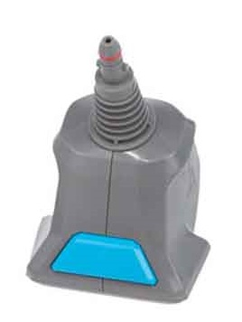Держатель для сменных насадок. Конструкцией предусмотрено предохранительное устройство, не позволяющее подавать пар, если не подсоединен держатель или удлинительный шланг.
Аргументы для продажи
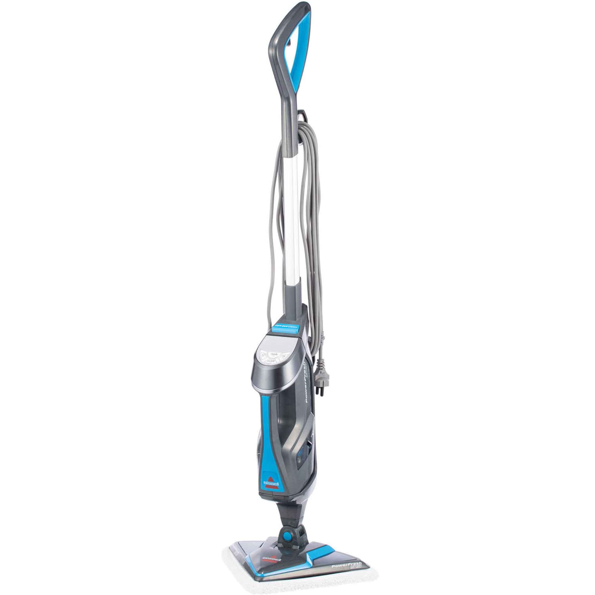- Многофункциональный пароочиститель 2 в 1
- Треугольная насадка для уборки в углах и около плинтуса
- Подвижное шарнирное соединение обеспечивает комфорт при использовании швабры
- Съёмный модуль Lift – Off
- Готовность к работе за 30 секунд
- Ассортимент насадок для тщательной уборки
- Уборка без химии
Технические характеристики
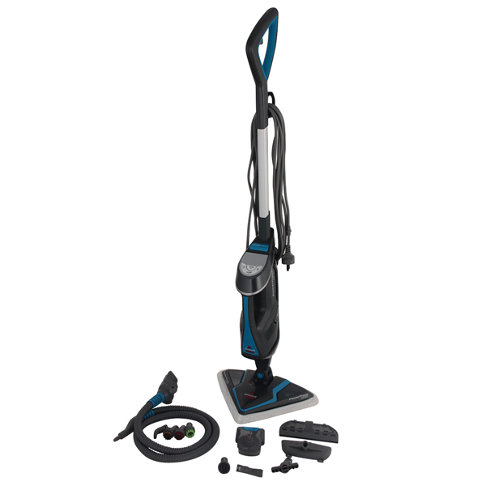
Потребляемая мощность: 1600 Вт
Съемный резервуар для воды: 400 мл
Время нагрева: 30 секунд
Съемный парогенератор
Длина кабеля: 7.5 м
Радиус работы: 8.5 м
Габариты (ВхШхГ): 113.3x28x34 см
Вес: 4.5 кг
Максимальная продолжительность работы: 25 мин
Цвет: темно-серый металлик/голубой
Страна производства: КНР